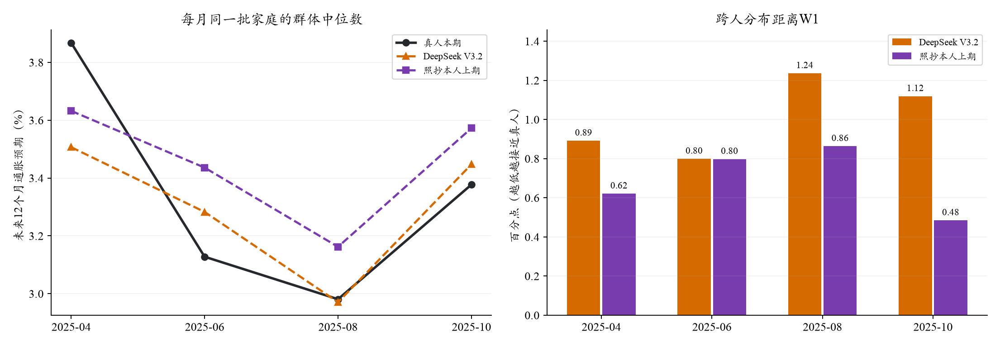
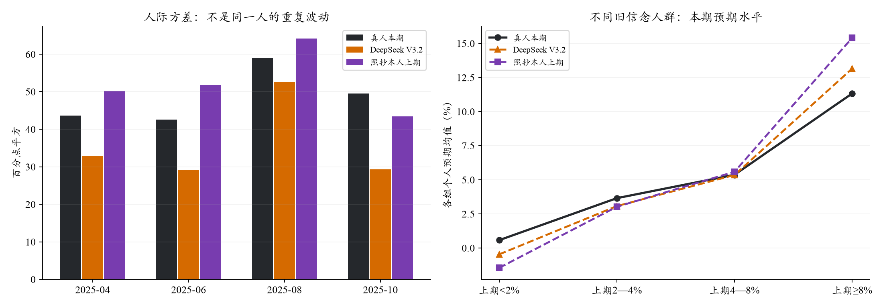

原四期同输入模型比较 · 旧轨迹方差检查
V3.2：2025新增四个月验证
共同有效样本上中位数更接近真人，但胜过照抄的优势对缺失和生成遍数敏感；跨人分布仍落后。这是新月份的条件重建结果，不能据此证明模型没有接触过相关历史信息。完整逐月结果均保留。
2025年4、6、8、10月，每月192名回访者，每人生成两遍。共同可计分741个人月、594名不同受访者；重复生成不增加真人样本量。温度0.5，OpenRouter → 固定SiliconFlow FP8的DeepSeek V3.2。
接口错误22份；输出格式无效0份；模型Q9连续密度可计分1512份。未满足既有最终覆盖检查，以下仅为有效支持上的描述结果。
同人群中位数MAE0.174 pp照抄本人上期 0.230 pp
模型RMSE 0.224 pp
跨人分布距离W11.011 pp照抄本人上期 0.691 pp
越低越接近真人
跨人四分位距IQR4.215 pp真人 5.544 pp
仍需结合尾部与方差判断
1. 各月总体水平与分布

单位pp。每人Q9十档拟合连续密度并取均值，再计算跨人的设计加权中位数；逐月逐遍先算误差，再等权平均。折线把两遍中位数平均，仅供展示。Q8另报，其中心MAE为1.250pp，不与Q9混算。
2. 人际差异与旧信念人群

跨人方差：模型36.03、真人48.67 pp²。同一个人两遍回答的平均绝对差为0.503pp，这与不同人之间的差异是两件事。
距官方全国中位数±0.5pp内：模型14.9%、真人17.6%。集中或分散都不能单独证明记忆真值。先验组采用既有固定边界，不按本轮结果调整。
分组支持与稀疏格
沿用既有提示：每格少于8人、ESS低于5或最大权重超过25%为稀疏。合计0格，分组只作描述，不作因果解释；同一受访者可跨月出现。
3. “胜过照抄”是否稳健？
需要保留：网络失败和计分失败改变了共同样本，照抄基线的MAE也从原定人群的0.114变为共同样本的0.230pp。中位数是排序统计量，少量记录的缺失也可能移动其位置。因此不能把顶部的改善直接当成稳定优势。
分别评价每一遍及其有效人群：第一遍模型MAE 0.219、照抄 0.180pp；第二遍模型 0.094、照抄 0.155pp。两遍的优劣排序不同，且支持人群也不同。
另作零API的事后工程诊断：保留全部763个真人可计分个人月，仅在24个无有效模型分数的槽上，用本人上期均值作标量后备。得到模型加后备的MAE 0.108、纯照抄 0.114pp，优势仅0.006pp；RMSE则为0.146对0.120pp，模型较差。该人群W1为0.987对0.704pp。
这是缺失处理敏感性，不是新模型回答或新主成绩：原始回复和主分析不改，不伪造十档概率，也没有新增调用。说明总体中心有信号，但尚不足以宣布稳定胜过基线。
4. 官方全国指标单独比较
本轮模拟样本的中位数对官方全国值，MAE为0.213pp；全国上月值照抄MAE为0.121pp。对全波次、同一项目计分器重算的中心，模型MAE为0.238pp。
这些不是顶部的同人群评分。模型只覆盖合格回访者；完整全国调查还包含新入组者，官方计分与项目冻结近似也有差别，不能把差异全归因于模型。
5. 本轮保留了哪些配置
沿用食品采购角色匹配、食品分类价格视图、3条共同新闻＋5条个人新闻、合成CE支出与美联储信心、本人真实上期Q8/Q9及更早摘要。直接填写本期Q8/Q9，附无数值结构示例。本轮没有加入新心理或频率提示，也没有按本轮结果拟合组合权重。
四个月截止分别为4月10日、6月11日、8月12日、10月24日纽约时间当天结束。10月的9月CPI已经发布，但9月就业尚未发布，因此使用已发布的8月就业；4月的信心分配使用当时已公开的2024年Gallup波次。
6. 对训练数据担忧的含义
AWS同名V3.2服务模型卡列知识截止为2025年3月；DeepSeek V3.2于2025年12月1日发布。两者不能证明本次托管权重的完整训练截止。按SCE微观资料约九个月后公开的规则推断，本轮目标微观回答应晚于模型发布才公开，但原始历史上传日期未逐份核验，而且全国聚合指标当时已经公开。故本轮是补充证据，仍不能称严格无污染预测。
来源：AWS模型卡、DeepSeek发布说明、纽约联储SCE FAQ。后续模型发布后封存、结果尚未公开的预测可提供更强的时间边界。
7. 调用、成本与复现
实际请求1,536次，API报告费用$0.9034，包含未知失败的保守记账为$0.9811，运行30.2分钟，硬上限$6。前16份以最多8并发通过格式检查，随后最多16并发，自动重试0次；新闻分类用量估算$0.365931另计。22份网络失败与2份模型密度计分失败保留，没有补发；原始概率和归一化另记。
原始提示/个人回答保存在私有outputs；本页仅呈现聚合。主统计使用设计权重，通用评价器的等权分支只作敏感性；v1派生全国字段的分支混用已隔离，本页从原计分缓存按正确权重重算，0新调用、0重新拟合Q9。聚合结果与留一月检查。
旧四期与本轮月份和样本不同，不能将成绩差直接解释成模型变化。仅四个新月份，对时间外推仍有限；不自动升级全量主配置。生成于2026-10-21T16:48:42.771992+00:00。